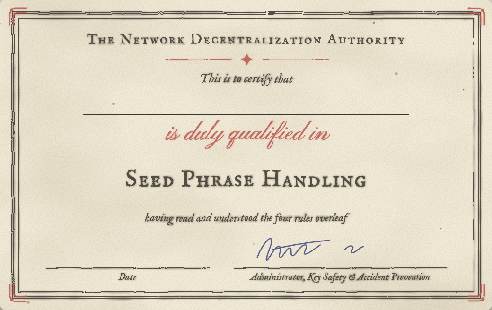
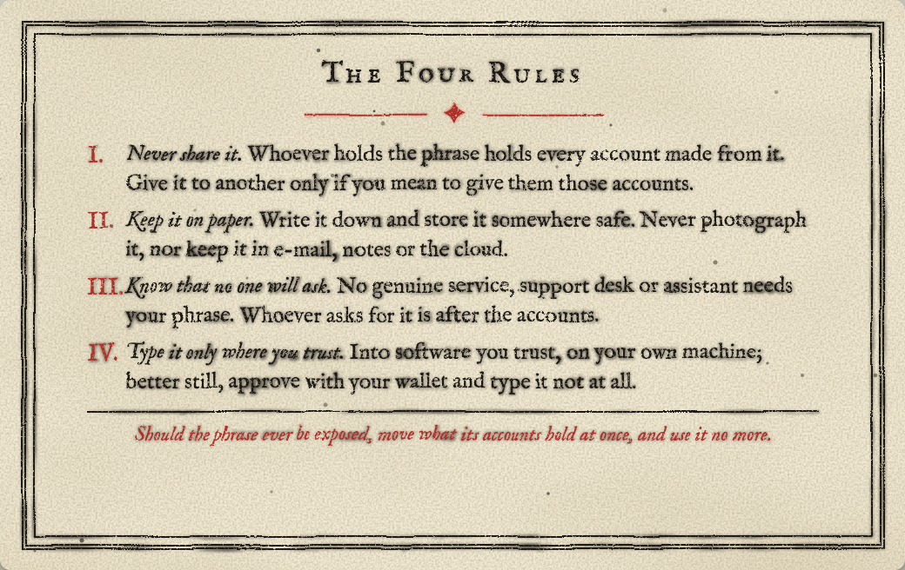

Tired of reading Farcaster through someone else's servers?
Now! Your own
Farcaster
For less than a cup of coffee a day!*
It's this easy
hetzner.shrents the serversetup.shsyncs the nodeinstall.shputs a demo client on your computer
*Hetzner bills about $0.16 an hour for the server and its 1 TB disk, until you delete them: about $3.93 a day. About $1 to sync and try. One command stops the billing. If the usual server is sold out, the fallback costs about $0.20 an hour. Full details in the docs.
Page 189Before you beginPrepare the required tools
A little preparation now will make the rest of the afternoon go smoothly. Look over the lists on this page and get each item ready before you begin assembly. If something is missing, this is the time to install it or sign up for it, not halfway through the assembly.
Everything in the Git kit is software. It includes the scripts for renting a server, building a Snapchain node, and a demo client implementation to test with. Prepare the tools and accounts below, and the kit will take care of the rest.
Tools you will need (you're expected to have these already)
Optional (recommended)
Not included (you supply these)
Parts list (what's included in the Git kit; check each part exists and look it over)
| Key | Part | Description | |
|---|---|---|---|
| 0 | hetzner.sh | Rents the server | |
| 1 | setup.sh | Builds the node, and installs fc-node, the gauge you read on the server | |
| 2 | install.sh | Installs a demo client to test your node |
Preparation
hcloud context create fc-node
CautionType tokens and seed phrases yourself, in your own terminal. Never paste them into a chat or an AI assistant: anyone who can read the transcript can use them.
*Hetzner bills by the hour, about $0.16 (cx43 with a 1000 GB volume), until you delete the server. If cx43 is sold out the kit uses cpx41, about $0.20 an hour.
Step-by-step assembly
The assembly is three commands. Steps 0 and 2 take a minute or two at your computer. In step 1 the node builds itself on the server for 6 to 8 hours, and you need only look in on it now and then. Read each step all the way through before you do it. When you've done it, mark it in the space provided: (✓). Your marks are saved on this computer, so you can come back to them.
The serverTime: 30 seconds
curl -fsSL https://raw.githubusercontent.com/eucalyptus-viminalis/create-fc/main/provision/hetzner.sh | bash
The nodeTime: 6–8 hours, unattended
ssh -o StrictHostKeyChecking=accept-new root@<address> 'curl -fsSL https://raw.githubusercontent.com/eucalyptus-viminalis/create-fc/main/node/setup.sh | bash'ssh root@<address> fc-node statusCautionDo not run the build command again while setup is running. If the gauge says setup has stopped, run it again and it will pick up where it left off.
Step-by-step assembly(continued from page 3)
The clientTime: 1 minute
You can do this step as soon as the node is catching up.
curl -fsSL https://raw.githubusercontent.com/eucalyptus-viminalis/create-fc/main/client/install.sh | bash -s -- http://<address>:3381fameboy ui
ssh -t root@<address> fc-node app-accountTo share your nodeOnce it has an app account, anyone can sign in through your node. To limit it to friends, run ssh root@<address> fc-node signin invite, then fc-node invite <name> for each friend. They type the code on the sign-in page.
Initial tests
fameboy feed -n 5
To remove from serviceWhen you are finished, delete the server to stop the billing. The command lists what it will delete and asks before it does. Your app key stays on your computer.
curl -fsSL https://raw.githubusercontent.com/eucalyptus-viminalis/create-fc/main/provision/hetzner-delete.sh | bash
This completes the assembly. Proceed to the Membership Application.
operator's packet · document 3
how farcaster
works
the node you just built
first printing
contents
Each page is one idea, with a picture. Read them in order, or go straight to the one you need.
fid
A Farcaster account is a number, its FID, registered on OP Mainnet (Optimism).
Usernames, keys and storage all hang off it. The account we tested with is 3355372.
custody
address
Most wallets use the first address, m/44'/60'/0'/0/0. fameboy login checks that one first, then the next nine.
The Ethereum address that owns the FID, derived from the seed phrase. It can transfer the account and add or remove keys. It never needs to sign a cast.
app keys
Ed25519 keys that sign everyday messages for one app.
The custody key authorizes each one, naming the app that asked (its requestFid). One account can have many: Farcaster's app, Firefly, this client.
app account
There's no shared @fameboy, since every node would need its key. Each node names its own, like @fameboyteal.
The account that asks for an app key. Its name is what you approve on your phone, and what your casts show "via".
gasless
app keys
App keys used to need an Optimism transaction. Now a KEY_ADD message does it: no transaction, no gas, about a second.
Each key lists the message types it may sign, its scopes.
messages
Timestamps count seconds from 1 January 2021, not 1970. A message's ID is a 20-byte BLAKE3 hash, the 0x085bf8a4… you see in fameboy.
Casts, reactions, follows and profile fields are all signed protobuf messages.
shards
Snapchain splits users across shards 1 and 2 by a hash of the FID.
Shard 0 orders the other two and holds what every shard needs, like app keys. Each shard is its own chain, so their heights differ.
read nodes
& validators
A read node, like yours, fetches the decided blocks, checks their signatures, and serves the API. Anyone can run one.
Validators propose and vote on blocks; there's a fixed set of them.
mempool &
submission
Your read node accepts writes: it checks the message, gossips it to the validators, and keeps nothing.
"Accepted" means valid and relayed, not "in a block". That's why fameboy reads every write back. If gossip drops it, send it again.
storage rent
One unit comes with registration (about $0.20 when we checked). fameboy login checks there's at least one.
To post, an account needs rented storage units, paid on Optimism. When a store fills up, the oldest messages are pruned.
fnames
Usernames like @dwr come from the fname server, which signs a proof that the network stores.
ENS names work too, so yourname.eth can be your username.
keep this with
your node
This booklet is part of the operator's packet. For the steps, see the assembly manual. For anything that breaks, see the service pages.
create-fc · printed in the open
What it costs
About $1.30 to sync and try, about $4 a day, $105 a month. Billed by the hour until you delete it. Full breakdown
| No. | Symptom | Probable Cause | Remedy |
|---|
If Trouble Persists
File a report with the step and the exact output at github.com/eucalyptus-viminalis/create-fc, or message @3070.eth for a 30-minute session on your own machine.
Trouble-Shooting
How to Use This Chart
Find what you see in the index above and note its fault number, then unfold Chart 7-2 and read across: symptom, probable cause, remedy. Begin at the test point nearest the trouble.
- TP1 Your computerhcloud context active
- TP2 The serverssh root@<ip> fc-node status
- TP3 The clientfameboy ui
Seed phrase handling: a qualification card


The four rules
- Never share it. Whoever holds the phrase holds every account made from it. Give it to another only if you mean to give them those accounts.
- Keep it on paper. Write it down and store it somewhere safe. Never photograph it, nor keep it in e-mail, notes or the cloud.
- Know that no one will ask. No genuine service, support desk or assistant needs your phrase. Whoever asks for it is after the accounts.
- Type it only where you trust. Into software you trust, on your own machine; better still, approve with your wallet and type it not at all.
Should the phrase ever be exposed, move what its accounts hold at once, and use it no more.
It's playtime, not scrolltime.
1Catch up
Scrolling eats your day. fameboy values your time: it shows what's happening on the network at a glance 👀, so you can catch up quickly and get on with your day.
2Network
Every follow counts, and nobody wants to see slop. fameboy scores new followers on their onchain and offchain profiles, so you can confidently decide who's even worth following back 💅.*
3Play
Being social online should be fun. We like games 🎮, so fameboy plays like one, with special prizes for the most worthy participants.
Is this a weather app? Haha, who knows! But it feels great to check in every morning :)
— a happy @fameboyteal
*Follower scores are coming to fameboy; screen shown is a preview. @fameboyclear is the copy the create-fc project hosts on its own Snapchain node: no API keys, no one else's servers. Run your own copy, in your own colour, with the create-fc Git kit. Sound effects can be switched off with M.
network conditionssnapchain
new followers4
Try it now!
No install, no node. Open the copy we host, @fameboyclear, and sign in by approving in the Farcaster app.
fameboyclear.91-99-76-223.sslip.io